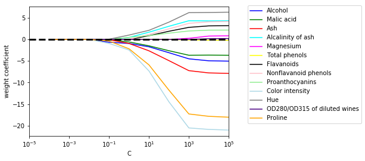
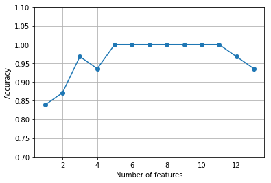
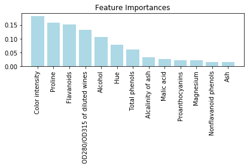

データ前処理 — よりよいトレーニングセットの構築¶
4.1 欠測データへの対処¶
- 欠測値
- データ収集過程での誤り
- 不適切な測定
- アンケートの空欄
- 欠測値は予期せぬ結果を産み出す
In [1]:
import pandas
from io import StringIO
csv_data = """
A,B,C,D
1.0,2.0,3.0,4.0
5.0,6.0,,8.0
10.0,11.0,12.0,
"""
df = pandas.read_csv(StringIO(csv_data))
df
Out[1]:
| A | B | C | D | |
|---|---|---|---|---|
| 0 | 1.0 | 2.0 | 3.0 | 4.0 |
| 1 | 5.0 | 6.0 | NaN | 8.0 |
| 2 | 10.0 | 11.0 | 12.0 | NaN |
In [2]:
df.isnull().sum()
Out[2]:
A 0
B 0
C 1
D 1
dtype: int64
4.1.1 欠測値を持つサンプル／特徴量を取り除く¶
In [3]:
# Drop rows contains NaN column
df.dropna()
Out[3]:
| A | B | C | D | |
|---|---|---|---|---|
| 0 | 1.0 | 2.0 | 3.0 | 4.0 |
In [4]:
# Drop columns contains NaN
df.dropna(axis=1)
Out[4]:
| A | B | |
|---|---|---|
| 0 | 1.0 | 2.0 |
| 1 | 5.0 | 6.0 |
| 2 | 10.0 | 11.0 |
4.1.2 欠測値を補完する¶
- 標本や特徴量全体の削除 (CCA に相当する) は、データの損失につながり、信頼性を損ねたりする
注意: この書籍で紹介されている手法は「単一代入法」であり、望ましい方法ではない。
In [5]:
from sklearn.preprocessing import Imputer
# 平均値補完
imr = Imputer(missing_values='NaN', strategy='mean', axis=0)
imr = imr.fit(df)
imputed_data = imr.transform(df.values)
imputed_data
Out[5]:
array([[ 1. , 2. , 3. , 4. ],
[ 5. , 6. , 7.5, 8. ],
[ 10. , 11. , 12. , 6. ]])
4.1.3 scikit-learn の推定器API¶
Imputerは変換器（transformer) クラスに属する- 変換器は、
fit()とtransform()の 2 つのメソッドを持つ - 変換器は、
fit()で教師データからパラメータを学習し、transform()でパラメータに基づいた変換を行う - 一方で推定器は、
fit()とtransform(),predict()の 3 つのメソッドをもつ
4.2 カテゴリデータの処理¶
In [6]:
import pandas
df = pandas.DataFrame([
['green', 'M', 10.1, 'class1'],
['red', 'L', 13.5, 'class2'],
['blue', 'XL', 15.3, 'class1']])
df.columns = ['color', 'size', 'price', 'classlabel']
df
Out[6]:
| color | size | price | classlabel | |
|---|---|---|---|---|
| 0 | green | M | 10.1 | class1 |
| 1 | red | L | 13.5 | class2 |
| 2 | blue | XL | 15.3 | class1 |
4.2.1 順序特徴量のマッピング¶
- map() メソッドで順序特徴量を整数値へマッピングする
In [7]:
size_mapping = {'XL': 3, 'L': 2, 'M': 1}
df['size'] = df['size'].map(size_mapping)
df
Out[7]:
| color | size | price | classlabel | |
|---|---|---|---|---|
| 0 | green | 1 | 10.1 | class1 |
| 1 | red | 2 | 13.5 | class2 |
| 2 | blue | 3 | 15.3 | class1 |
4.2.2 クラスラベルのエンコーディング¶
エンコーディングのスクラッチ
In [8]:
import numpy
class_mapping = {l:i for i, l in enumerate(numpy.unique(df['classlabel']))}
class_mapping
Out[8]:
{'class1': 0, 'class2': 1}
In [9]:
df['classlabel'] = df['classlabel'].map(class_mapping)
df
Out[9]:
| color | size | price | classlabel | |
|---|---|---|---|---|
| 0 | green | 1 | 10.1 | 0 |
| 1 | red | 2 | 13.5 | 1 |
| 2 | blue | 3 | 15.3 | 0 |
LabelEncoder を用いる
In [10]:
from sklearn.preprocessing import LabelEncoder
class_le = LabelEncoder()
y = class_le.fit_transform(df['classlabel'].values)
y
Out[10]:
array([0, 1, 0])
In [11]:
class_le.inverse_transform(y)
Out[11]:
array([0, 1, 0])
4.2.3 名義特徴量での one-hot エンコーディング¶
- one-hot エンコーディング: 名義尺度に対してダミー変数を作る
- OneHotEncoder を使う
In [12]:
from sklearn.preprocessing import OneHotEncoder
X = df[['color', 'size', 'price']].values
color_le = LabelEncoder()
X[:, 0] = color_le.fit_transform(X[:, 0])
ohe = OneHotEncoder(categorical_features=[0])
# first 3 columns are color
ohe.fit_transform(X).toarray()
Out[12]:
array([[ 0. , 1. , 0. , 1. , 10.1],
[ 0. , 0. , 1. , 2. , 13.5],
[ 1. , 0. , 0. , 3. , 15.3]])
get_dummies() 関数を用いると、文字列値を持つ列のみがダミー変数化される
In [13]:
pandas.get_dummies(df[['price', 'color', 'size']])
Out[13]:
| price | size | color_blue | color_green | color_red | |
|---|---|---|---|---|---|
| 0 | 10.1 | 1 | 0 | 1 | 0 |
| 1 | 13.5 | 2 | 0 | 0 | 1 |
| 2 | 15.3 | 3 | 1 | 0 | 0 |
4.3 データセットをトレーニングデータセットとテストデータセットに分割する¶
In [14]:
df_wine = pandas.read_csv('https://archive.ics.uci.edu/ml/machine-learning-databases/wine/wine.data', header=None)
df_wine.columns = [
'Class label', 'Alcohol', 'Malic acid', 'Ash',
'Alcalinity of ash', 'Magnesium', 'Total phenols', 'Flavanoids',
'Nonflavanoid phenols', 'Proanthocyanins', 'Color intensity', 'Hue',
'OD280/OD315 of diluted wines', 'Proline'
]
numpy.unique(df_wine['Class label'])
Out[14]:
array([1, 2, 3])
In [15]:
df_wine.head()
Out[15]:
| Class label | Alcohol | Malic acid | Ash | Alcalinity of ash | Magnesium | Total phenols | Flavanoids | Nonflavanoid phenols | Proanthocyanins | Color intensity | Hue | OD280/OD315 of diluted wines | Proline | |
|---|---|---|---|---|---|---|---|---|---|---|---|---|---|---|
| 0 | 1 | 14.23 | 1.71 | 2.43 | 15.6 | 127 | 2.80 | 3.06 | 0.28 | 2.29 | 5.64 | 1.04 | 3.92 | 1065 |
| 1 | 1 | 13.20 | 1.78 | 2.14 | 11.2 | 100 | 2.65 | 2.76 | 0.26 | 1.28 | 4.38 | 1.05 | 3.40 | 1050 |
| 2 | 1 | 13.16 | 2.36 | 2.67 | 18.6 | 101 | 2.80 | 3.24 | 0.30 | 2.81 | 5.68 | 1.03 | 3.17 | 1185 |
| 3 | 1 | 14.37 | 1.95 | 2.50 | 16.8 | 113 | 3.85 | 3.49 | 0.24 | 2.18 | 7.80 | 0.86 | 3.45 | 1480 |
| 4 | 1 | 13.24 | 2.59 | 2.87 | 21.0 | 118 | 2.80 | 2.69 | 0.39 | 1.82 | 4.32 | 1.04 | 2.93 | 735 |
In [16]:
from sklearn.model_selection import train_test_split
X = df_wine.iloc[:, 1:].values
y = df_wine.iloc[:, 0].values
X_train, X_test, y_train, y_test = train_test_split(X, y, test_size=0.3, random_state=0)
4.4 特徴量の尺度を揃える¶
- 特徴量のスケーリング (feature scaling)
- 正規化 (normalization): 値域を \([0, 1]\) にスケールする \(x_{norm}^{(i)} = \frac{x^{(i)} - x_{min}}{x_{max} - x_{min}}\)
- 標準化 (standardization): 標準化 \(x_{std}^{(i)} = \frac{x^{(i)} - \mu_x}{\sigma_x}\)
In [17]:
from sklearn.preprocessing import MinMaxScaler
mms = MinMaxScaler()
X_train_norm = mms.fit_transform(X_train)
X_test_norm = mms.transform(X_test)
In [18]:
from sklearn.preprocessing import StandardScaler
stdsc = StandardScaler()
X_train_std = stdsc.fit_transform(X_train)
X_test_std = stdsc.transform(X_test)
4.5 有益な特徴量の選択¶
4.5.1 L1 正則化による疎な解¶
- L1 正則化
- \(L1: ||w||_1 = \sum_{j=1}^{m}|w_j|\)
In [19]:
from sklearn.linear_model import LogisticRegression
LogisticRegression(penalty='l1')
lr = LogisticRegression(penalty='l1', C=0.1)
lr.fit(X_train_std, y_train)
print('Training accuracy:', lr.score(X_train_std, y_train))
print('Test accuracy:', lr.score(X_test_std, y_test))
Training accuracy: 0.983870967742
Test accuracy: 0.981481481481
In [20]:
# 切片
lr.intercept_
Out[20]:
array([-0.38375921, -0.15809518, -0.70041813])
In [21]:
# 係数
lr.coef_
Out[21]:
array([[ 0.28005382, 0. , 0. , -0.02779695, 0. ,
0. , 0.7100444 , 0. , 0. , 0. ,
0. , 0. , 1.23668311],
[-0.64395597, -0.06879977, -0.05720375, 0. , 0. ,
0. , 0. , 0. , 0. , -0.92688245,
0.0601489 , 0. , -0.37104599],
[ 0. , 0.06153206, 0. , 0. , 0. ,
0. , -0.63610706, 0. , 0. , 0.49812282,
-0.35821198, -0.57114533, 0. ]])
- 正則化パス
In [22]:
from matplotlib import pyplot
fig = pyplot.figure()
ax = pyplot.subplot(111)
colors = ['blue', 'green', 'red', 'cyan', 'magenta', 'yellow', 'black', 'pink', 'lightgreen', 'lightblue', 'gray', 'indigo', 'orange']
weights, params = [], []
for c in range(-4, 6):
lr = LogisticRegression(penalty='l1', C=10**c, random_state=0)
lr.fit(X_train_std, y_train)
weights.append(lr.coef_[1])
params.append(10**c)
weights = numpy.array(weights)
for column, color in zip(range(weights.shape[1]), colors):
pyplot.plot(params, weights[:, column], label=df_wine.columns[column+1],
color=color)
pyplot.axhline(0, color='black', linestyle='--', linewidth=3)
pyplot.xlim([10**(-5), 10**5])
pyplot.ylabel('weight coefficient')
pyplot.xlabel('C')
pyplot.xscale('log')
pyplot.legend(loc='upper left')
ax.legend(loc='upper center', bbox_to_anchor=(1.38, 1.03), ncol=1, fancybox=True)
pyplot.show()

4.5.2 逐次特徴選択アルゴリズム¶
次元削減
特徴選択
- 特徴量の一部を選択する
- 計算効率を改善する
- 無関係な特徴量を取り除くことで汎化性能を向上させる
- 正則化を使えないアルゴリズムで役立つ
特徴抽出
- 特徴空間からより次元の低い特徴空間へマッピングする
逐次特徴選択
- 貪欲探索
逐次後退選択 (SBS)
- 目的の個数の特徴量まで特徴量を逐次的に削除する
- \(J\): 最小化問題の目的関数
- \(d\): 元の特徴量数
- \(X_k\): \(k\) 次元特徴空間
- \(k = d\) でアルゴリズムを初期化
- 最小化問題において \(J\) を最大化する特徴量 \(x^-\) を決定する: \(x^- = argmax J(X_k - x)\)
- \(x^-\) を削除する: \(X_{k_1} = X_k - x^-; k := k - 1\)
In [24]:
from sklearn.base import clone
from itertools import combinations
import numpy
from sklearn.metrics import accuracy_score
class SBS():
""" Sequential backward selection """
def __init__(self, estimator, k_features, scoring=accuracy_score,
test_size=0.25, random_state=1):
self.scoring = scoring
self.estimator = clone(estimator)
self.k_features = k_features
self.test_size = test_size
self.random_state = random_state
self.indices_ = None
self.subsets_ = None
def fit(self, X, y):
X_train, X_test, y_train, y_test = train_test_split(
X, y,
test_size=self.test_size,
random_state=self.random_state,
)
dim = X_train.shape[1]
self.indices_ = tuple(range(dim))
self.subsets_ = [self.indices_]
score = self._calc_score(X_train, y_train,
X_test, y_test, self.indices_)
self.scores_ = [score]
while dim > self.k_features:
scores = []
subsets = []
for p in combinations(self.indices_, r=dim - 1):
score = self._calc_score(X_train, y_train, X_test, y_test, p)
scores.append(score)
subsets.append(p)
best = numpy.argmax(scores)
self.indices_ = subsets[best]
self.subsets_.append(self.indices_)
dim -= 1
self.scores_.append(scores[best])
self.k_score_ = self.scores_[-1]
return self
def transform(self, X):
return X[:, self.indices_]
def _calc_score(self, X_train, y_train, X_test, y_test, indices):
self.estimator.fit(X_train[:, indices], y_train)
y_pred = self.estimator.predict(X_test[:, indices])
score = self.scoring(y_test, y_pred)
return score
In [25]:
from sklearn.neighbors import KNeighborsClassifier
knn = KNeighborsClassifier(n_neighbors=2)
sbs = SBS(knn, k_features=1)
sbs.fit(X_train_std, y_train)
Out[25]:
<__main__.SBS at 0x7f380b4b2198>
In [27]:
k_feat = [len(k) for k in sbs.subsets_]
pyplot.plot(k_feat, sbs.scores_, marker='o')
pyplot.ylim([0.7, 1.1])
pyplot.ylabel('Accuracy')
pyplot.xlabel('Number of features')
pyplot.grid()
pyplot.show()

In [30]:
# 精度を最大化した 5 つの特徴を表示する
k5 = list(sbs.subsets_[8])
print(df_wine.columns[1:][k5])
Index(['Alcohol', 'Malic acid', 'Alcalinity of ash', 'Hue', 'Proline'], dtype='object')
In [31]:
knn.fit(X_train_std, y_train)
print('Training accuracy:', knn.score(X_train_std, y_train))
print('Test accuracy:', knn.score(X_test_std, y_test))
Training accuracy: 0.983870967742
Test accuracy: 0.944444444444
In [32]:
knn.fit(X_train_std[:, k5], y_train)
print('Training accuracy:', knn.score(X_train_std[:, k5], y_train))
print('Test accuracy:', knn.score(X_test_std[:, k5], y_test))
Training accuracy: 0.959677419355
Test accuracy: 0.962962962963
4.6 ランダムフォレストで特徴量の重要度にアクセスする¶
- ランダムフォレストで重要な特徴量を選択する
- ランダムフォレストはアンサンブル手法のひとつ
- 線形分離可能かどうかの前提は不要
- ランダムフォレストの意味解釈性には注意が必要で、 2 つ以上の特徴量に相関関係がある場合、そのうちの 1 つの特徴量のみの重要度のランクのみ高くなり、残りの重要度がランキングに反映されない可能性がある
- scikit-learn のランダムフォレストの実装は特徴量の重要度が計算できる
In [34]:
from sklearn.ensemble import RandomForestClassifier
feat_labels = df_wine.columns[1:]
forest = RandomForestClassifier(n_estimators=10000, random_state=0, n_jobs=-1)
forest.fit(X_train, y_train)
importances = forest.feature_importances_
indices = numpy.argsort(importances)[::-1]
for f in range(X_train.shape[1]):
print("%2d) %-*s %f" %
(f + 1, 30, feat_labels[indices[f]], importances[indices[f]]))
1) Color intensity 0.182483
2) Proline 0.158610
3) Flavanoids 0.150948
4) OD280/OD315 of diluted wines 0.131987
5) Alcohol 0.106589
6) Hue 0.078243
7) Total phenols 0.060718
8) Alcalinity of ash 0.032033
9) Malic acid 0.025400
10) Proanthocyanins 0.022351
11) Magnesium 0.022078
12) Nonflavanoid phenols 0.014645
13) Ash 0.013916
In [35]:
pyplot.title('Feature Importances')
pyplot.bar(
range(X_train.shape[1]),
importances[indices],
color='lightblue',
align='center'
)
pyplot.xticks(
range(X_train.shape[1]),
feat_labels[indices],
rotation=90
)
pyplot.xlim([-1, X_train.shape[1]])
pyplot.tight_layout()
pyplot.show()
